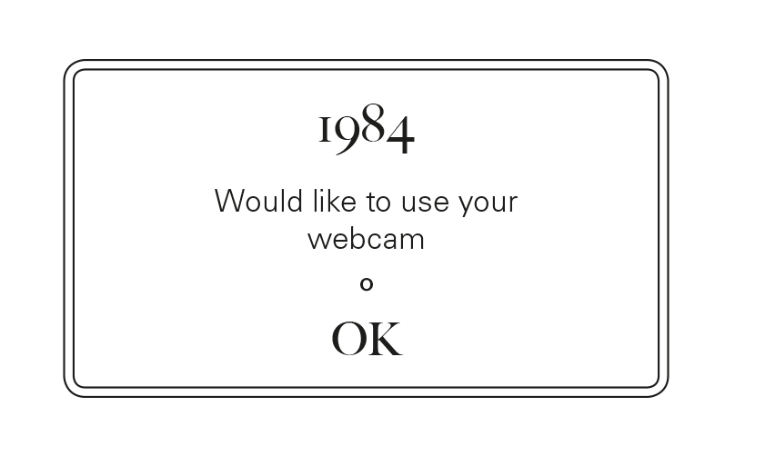
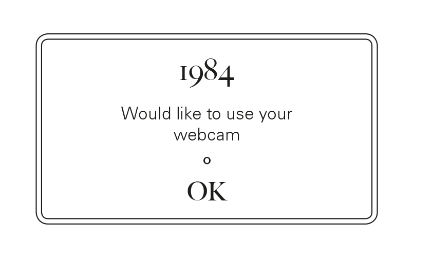
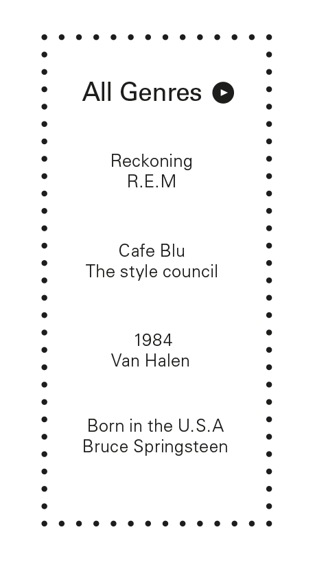
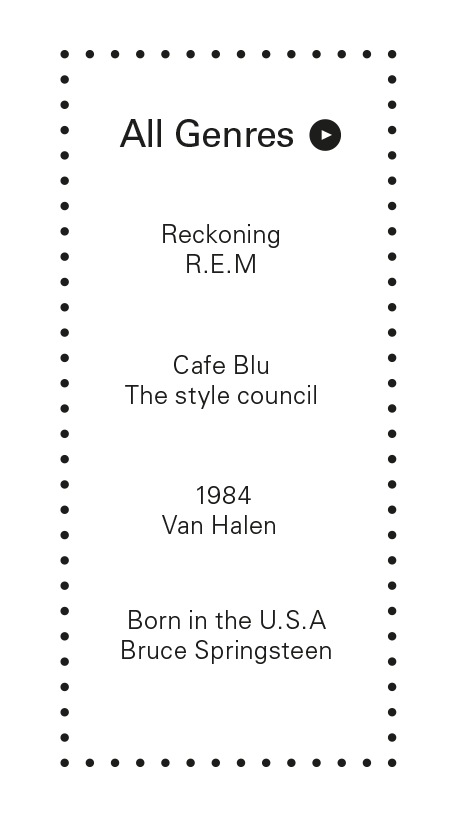

The Ministry of Truth—Minitrue, in Newspeak [Newspeak was the of- ficial language of Oceania. For an account of its structure and etymology see Appendix.]—was startlingly different from any other object in sight. It was an enormous pyramidal structure of glittering white concrete, soaring up, terrace after terrace, 300 metres into the air. From where Winston stood it was just possible to read, picked out on its white face
The Ministry of Love was the really frightening one. There were no windows in it at all. Winston had never been inside the Ministry of Love, nor within half a kilometre of it. It was a place impossible to enter except on official business, and then only by penetrating through a maze of barbedwire entanglements, steel doors, and hidden machine-gun nests. Even the streets leading up to its outer barriers were roamed by gorilla-faced guards in black uniforms, armed with jointed truncheons. Winston turned round abruptly. He had set his features into the expression of quiet optimism which it was advisable to wear when facing the telescreen. He crossed the room into the tiny kitchen. By leaving the Ministry at this time of day he had sacrificed his lunch in the canteen, and he was aware that there was

The thing that he was about to do was to open a diary. This was not illegal (nothing was illegal, since there were no longer any laws), but if detected it was reasonably certain that it would be punished by death, or at least by twentyfive years in a forced-labour camp. Winston fitted a nib into the penholder and sucked it to get the grease off. The pen was an archaic instrument, seldom used even for signatures, and he had procured one, furtively and with some difficulty, simply because of a feeling that the beautiful creamy paper deserved to be written on with a real nib instead of being scratched with an ink-pencil. Actually he was not used to writing by hand. Apart from very short notes, it was usual to dictate everything into the speak-write which was of course impossible for his present purpose. He dipped the pen into the ink and then faltered for
 

He sat back. A sense of complete helplessness had descended upon him. To begin with, he did not know with any certainty that this was 1984. It must be round about that date, since he was fairly sure that his age was thirty-nine, and he believed that he had been born in 1944 or 1945; but it was never possible nowadays to pin down any date within a year or two.
For whom, it suddenly occurred to him to wonder, was he writing this diary? For the future, for the unborn. His mind hovered for a moment round the doubtful date on the page, and then fetched up with a bump against the Newspeak word DOUBLETHINK. For the first time the magnitude of what he had undertaken came home to him. How could you communicate with the future? It was of its nature impossible. Either the future would resemble the present, in which case it would not listen to him: or it would be different from it, and his predicament would be meaningless.For some time he sat gazing stupidly at the paper. The telescreen had changed over to strident military music. It was curious that he seemed not merely to have lost the power of expressing himself, but even to have forgotten what it was that he had originally intended to say. For weeks past he had been making ready for this moment, and it had never crossed his mind that anything would be needed except courage. The actual writing would be easy. All he had to do was to transfer to paper the interminable restless monologue that had been running inside his head, literally for years. At this moment, however, even the monologue


It was nearly eleven hundred, and in the Records Department, where Winston worked, they were dragging the chairs out of the cubicles and grouping them in the centre of the hall opposite the big telescreen, in preparation for the Two Minutes Hate. Winston was just taking his place in one of the middle rows when two people whom he knew by sight, but had never spoken to, came unexpectedly into the room. One of them was a girl whom he often passed in the corridors. He did not know her name, but he knew that she worked in the Fiction Department. Presumably—since he had sometimes seen her with oily hands and carrying


The other person was a man named O’Brien, a member of the Inner Party and holder of some post so important and remote that Winston had only a dim idea of its nature. A momentary hush passed over the group of people round the chairs as they saw the black overalls of an Inner Party member approaching. O’Brien was a large, burly man with a thick neck and a coarse, humorous, brutal face. In spite of his formidable appeance he had a certain charm of manner. He had a trick of resettling his spectacles on his nose which was curiously disarming—in some in-
 

As usual, the face of Emmanuel Goldstein, the Enemy of the People, had flashed on to the screen. There were hisses here and there among the audience. The little sandy-haired woman gave a squeak of mingled fear and


Winston’s diaphragm was constricted. He could never see the face of Goldstein without a painful mixture of emotions. It was a lean Jewish face, with a great fuzzy aureole of white hair and a small goatee beard—a clever face, and yet somehow inherently despicable, with a kind of senile silliness in the long thin nose, near the end of which a pair of spectacles was perched. It resembled the face of a sheep, and the voice, too, had a sheep-like quality. Goldstein was delivering his usual venomous attack upon the doctrines of the Party—an attack so exaggerated and perverse that a child should have been able to see through it, and yet just plausible enough to fill one with an alarmed feeling that other people, less level-headed than oneself, might be taken in by it. He was abusing Big Brother, he was denouncing the dictatorship of the Party, he was demanding the immediate conclusion of peace with Eurasia, he was advocating freedom of speech, freedom of the Press, freedom of assembly, freedom of thought, he was crying hysterically that the revolution had been betrayed and all this in rapid polysyllabic speech which was a sort of parody of the